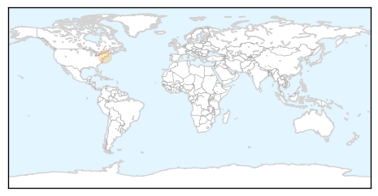
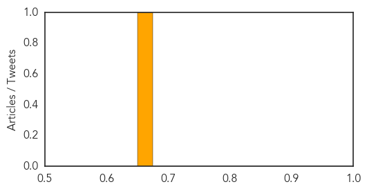
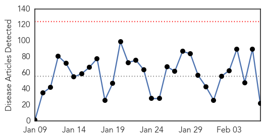
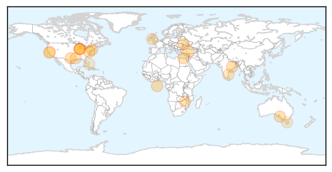

Hepatitis
30-Day Web Trend
3 alerts, 0 warnings

30-Day Twitter Trend
0 alerts, 0 warnings

Article Locations
Article Confidences
Top Articles:
Top Tweets:
-
No tweets found for Feb 07, 2015
Unknown
30-Day Web Trend
0 alerts, 0 warnings

30-Day Twitter Trend
6 alerts, 0 warnings

Article Locations
Article Confidences

Top Articles:
- 0.938
- Jaundice breaks out in Cuttack, 22 affected
- 0.917
- Chicago Tribune
- 0.917
- Chicago Tribune
- 0.917
- Chicago Tribune
- 0.917
- Chicago Tribune
- 0.917
- Chicago Tribune
- 0.917
- Chicago Tribune
- 0.917
- Chicago Tribune
- 0.917
- Chicago Tribune
- 0.917
- Chicago Tribune
- 0.917
- Chicago Tribune
- 0.866
- France's Hollande says Ukraine effort "one of last chances" for peace
- 0.866
- U.S. Department of Justice charges six with supporting Islamic State
- 0.864
- Bulawayo hospitals run out of drugs, oxygen
- 0.775
- Woman becomes ill while investigating death of monkey at Tulane research center
- 0.713
- Plan Panel Moots Public Health Cadre
- 0.697
- Visiting suspended at St James's Hospital following outbreak of flu
- 0.674
- 16 People Tested Positive for Tuberculosis Exposure at Northern California High School
- 0.638
- 111 maternal deaths in 2 years
- 0.634
- NCC Partners With Vita Health And Wellness District In Stamford
- 0.620
- Cherry disease fears spark graft caution
- 0.595
- The Nassau Guardian
Top Tweets:
-
No tweets found for Feb 07, 2015